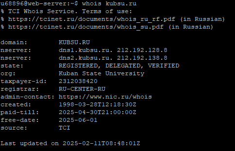
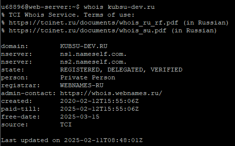

1) Получить от преподавателя на практике логин и пароль доступа к учебному серверу kubsu-dev.ru. Подключиться к нему по SSH с помощью клиента Putty, команды ssh или онлайн-версии ssh-клиента.

2) С помощью команды ping на учебном сервере узнать IP-адрес веб-сервера kubsu.ru, сделать скриншот вызова команды ping, добавить скриншот в gitрепозитарий задания.

3) С помощью команды nslookup узнать A-записи и MX-записи домена kubsu.ru и kubsu-dev.ru, добавить скриншоты в git-репозитарий задания.

4) С помощью команды whois узнать дату регистрации домена kubsu.ru и kubsudev.ru.
 